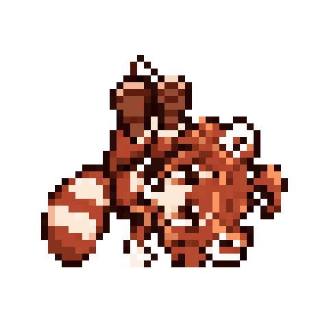
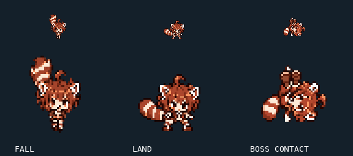
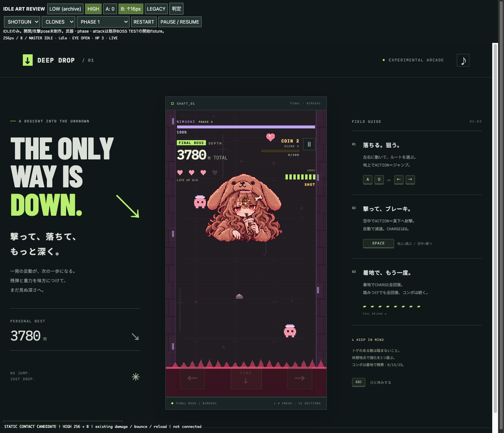
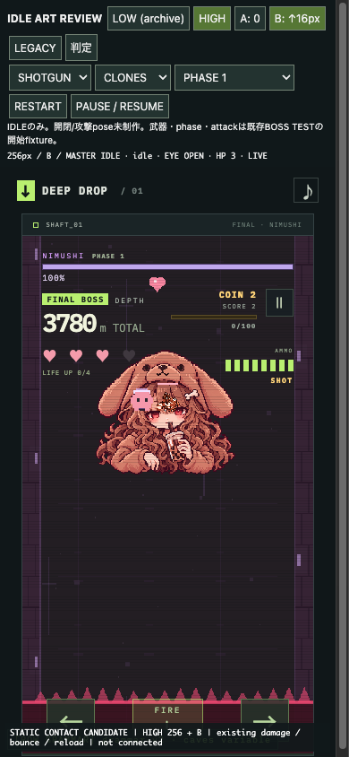

48×48・1フレームのHuman Review済みart。Bossは画面上側。足をBossへ向けた、被弾と反発の接触瞬間です。
既存のBoss接触は HP −1 → 反発 → CHARGE全回復。無傷の成功stompではありません。PLAYER BOSS CONTACT REBOUND v1 — ART LOCKED。gameplay・正式PLAYER rendererへは未接続です。




dev静止接触シーンを開く / 制作・検証記録